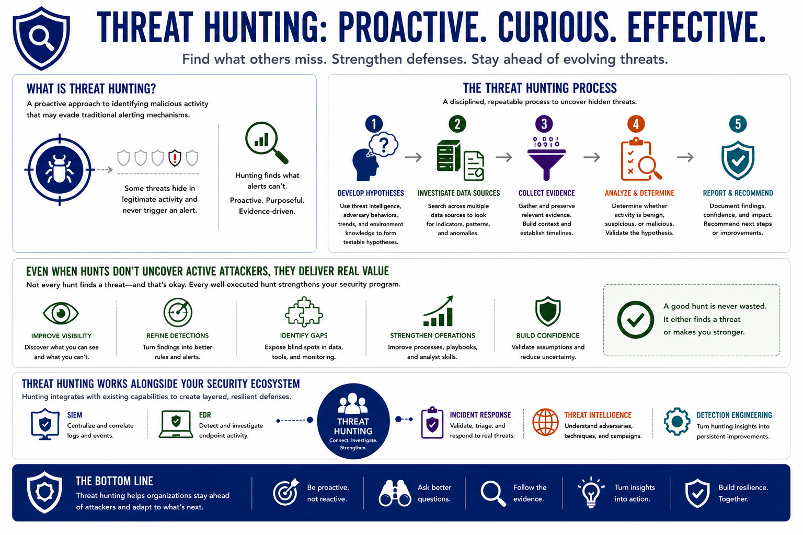

What is Threat Hunting?
Course Summary
Connecting to LMS... Progress: in progress
Version 1.0 | Introductory overview of defensive threat hunting practices.

Narration
Threat hunting is a proactive approach to identifying malicious activity that may evade traditional alerting mechanisms. Hunters develop hypotheses, investigate multiple data sources, collect evidence, and determine whether suspicious activity represents a real threat.
Even when hunts do not uncover active attackers, they improve visibility, refine detections, identify gaps, and strengthen security operations. Threat hunting works alongside SIEM, EDR, incident response, and threat intelligence to help organizations become more resilient against evolving threats.